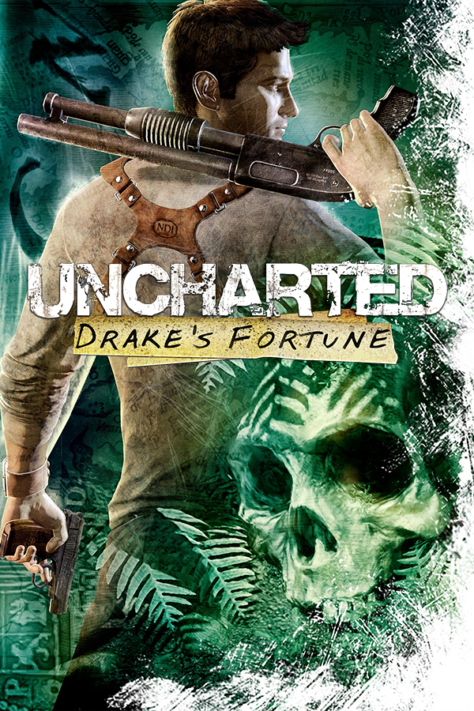

Uncharted: Drake's Fortune
Uncharted: Drake's Fortune
Details
|  | |
| Playtime | Not Played |
| Last Activity | Never |
| Added | 4/29/2025 4:54:57 |
| Modified | 4/30/2025 3:25:58 |
| Completion Status | Not Played |
| Library | Playnite |
| Source | |
| Platform | Sony PlayStation 3 |
| Release Date | 11/19/2007 |
| Community Score | 76 |
| Critic Score | 88 |
| User Score | |
| Genre | Action-adventure third-person shooter |
| Developer | Naughty Dog |
| Publisher | Sony Computer Entertainment |
| Feature | Single Player |
| Links | Wikipedia Official website IMDb MobyGames |
| Tag | [People] artist: Bob Rafei [People] artist: Bruce Straley [People] composer: Greg Edmonson [People] designer: Hirokazu Yasuhara [People] designer: Neil Druckmann [People] designer: Richard Lemarchand [People] director: Amy Hennig [People] programmer: Dan Liebgold [People] programmer: Pål-Kristian Engstad [People] programmer: Travis McIntosh [People] writer: Amy Hennig [People] writer: Josh Scherr [People] writer: Neil Druckmann |
Description
Uncharted: Drake's Fortune is a 2007 action-adventure game developed by Naughty Dog and published by Sony Computer Entertainment for the PlayStation 3. It is the first game in the Uncharted series. The game follows Nathan Drake, the supposed descendant of explorer Sir Francis Drake, as he searches for the lost treasure of El Dorado with journalist Elena Fisher and mentor Victor Sullivan.
The development of Uncharted: Drake's Fortune began in 2005, and saw Naughty Dog altering their approach to development, as they sought to create a humanized video game that was distinct from their other entries, settling on an action-adventure game with platforming elements and a third-person perspective. The team regularly updated or wholly changed various aspects related to the story, coding, and the game's design which led to delays. The development team found influence for many of the game's aesthetic elements from film, pulp magazines, and movie serials.
Extensively marketed as a PlayStation exclusive, Uncharted: Drake's Fortune received generally favorable reviews, with praise for its characters and voice acting, story, music, technical achievements, and production values, drawing similarities to blockbuster films. It faced some criticism for its graphical issues, short length, vehicle sections, and marked difficulty. Uncharted: Drake's Fortune sold one million copies after ten weeks of release. It was followed by the sequel Uncharted 2: Among Thieves in 2009, and was re-released on PlayStation 4 as part of Uncharted: The Nathan Drake Collection.
Synopsis
Setting and characters
The central character of Uncharted: Drake's Fortune is Nathan Drake (voiced by Nolan North), a renowned adventurer who claims to be the descendant of the famous explorer Sir Francis Drake. Together with his mentor Victor Sullivan (voiced by Richard McGonagle) and journalist Elena Fisher (voiced by Emily Rose), Drake embarks on a quest to discover the hidden riches of El Dorado.
Treasure hunter Nathan "Nate" Drake, accompanied by reporter Elena Fisher, recovers the coffin of his self-proclaimed ancestor Sir Francis Drake off the coast of Panama, having located it from coordinates inscribed on a family heirloom: a ring Nate wears around his neck. The coffin contains Sir Francis' diary, which gives the location of El Dorado. Pirates attack and destroy Nate's boat, but Nate's friend and mentor, Victor "Sully" Sullivan, rescues the two in his seaplane. Fearing Elena's reporting will attract potential rivals, Nate and Sully abandon her at a dock.
Nate and Sully discover an alcove that once held a large statue after following the diary to the indicated spot, and realize that El Dorado is not a city but rather a golden idol. They find a Nazi U-boat, which contains a page from Drake's diary showing the statue was taken to a remote island in the South Pacific. However, mercenaries led by criminal Gabriel Roman (Simon Templeman), to whom Sully owes a substantial debt, and his lieutenant Atoq Navarro (Robin Atkin Downes), intercept Nate and Sully. Sully is shot in the chest and collapses, but Nate manages to escape, encounters Elena, and flies with her to the island.
On the way, anti-aircraft fire forces Elena and Nate to bail out and they are separated. After retrieving supplies from the wrecked seaplane, Nate heads toward an old fort to find Elena. After Nate is briefly captured by pirates led by his old associate Eddy Raja (James Sie), Elena breaks him free and they flee to the island's old customs house. After finding records showing the statue was moved further inland to the monastery, they find that Sully is somehow alive and accompanying Roman and Navarro. Nate and Elena find and rescue Sully who, having survived due to Drake's diary blocking the bullet, explains he was buying time for Nate by misleading Roman.
Searching through a mausoleum, Nate overhears an argument between Roman, Navarro, and Eddy, revealing that Roman hired Eddy to capture Nate and secure the island, with the reward being a share of El Dorado. Following Nate's escape, Roman doubts Eddy's abilities and ignores his claim that something cursed on the island is killing his men, leading him to dismiss Eddy and his crew. Regrouping, Nate and Elena find a passage leading to a treasure vault, in which they find the body of Drake, assuming that he died searching for the treasure. They encounter a terrified Eddy and a crew member, shortly before they are attacked by mutated humans who kill the crew member; despite Nate's efforts, Eddy is also killed when one drags him into a pit.
Nate and Elena escape and find themselves in an abandoned German bunker. Venturing into the base, Nate discovers that the Germans had sought the statue during World War II, but like the Spaniards before them, became cursed by the statue, causing them to become mutants. Sir Francis, knowing of the statue's power, attempted to keep it on the island by destroying the ships and flooding the city, before he too was killed by the mutants.
Nate returns to find Elena has been captured by Roman and Navarro. Regrouping with Sully, he fails to stop them from reaching the statue. Navarro, aware of the curse, tricks Roman into opening the statue, revealing it to be a sarcophagus containing a mummy infected with an airborne mutagenic virus. Upon Roman turning into one of the mutants, Navarro kills him and takes control of his men. Berating Nate's group for not being imaginative, he plans to sell the virus as a biological weapon. Nate jumps onto the sarcophagus and rides it as it is airlifted onto a boat in the bay. He engages and defeats Navarro and manages to sink both the sarcophagus and him to the bottom of the ocean. Sully arrives, and after Nate and Elena display affection towards each other, they leave the island with several chests of treasure.
Gameplay
Gameplay in Uncharted is a combination of action-adventure gameplay elements and some 3D platforming with a third-person perspective. Platforming elements allow Nate to jump, swim, grab and move along ledges, climb and swing from ropes, and perform other acrobatic actions that allow players to make their way along the ruins in the various areas of the island that Drake explores.
When facing enemies, the player can either use melee and combo attacks at close range to take out foes or can opt to use weapons. Melee attacks comprise a variety of single punches, while combo attacks are activated through specific sequences of button presses that, when timed correctly, offer much greater damage; the most damaging of these is the specific "brutal combo", which forces enemies to drop twice the ammunition they would normally leave. Nate can only carry one pistol and one rifle at a time, and there is a limited amount of ammunition per gun. Picking up a different firearm switches that weapon for the new one. Grenades are also available at certain points, and the height of the aiming arc is adjusted by tilting the Sixaxis controller up or down. These third-person perspective elements were compared by several reviewers to Gears of War, in that the player can have Drake take cover behind walls, and use either blind fire or aimed fire to kill enemies. In common with the aforementioned game, Uncharted lacks an actual on-screen health bar; instead, when the player takes damage, the graphics begin to lose color. While resting or taking cover for a brief period, Drake's health level, indicated by the screen color, returns to normal.
The game also includes vehicle sections, where Drake must protect the jeep he and Elena are in using a mounted turret, and where Drake and Elena ride a jet ski along water-filled routes while avoiding enemy fire and explosive barrels. While players direct Drake in driving the jet ski, they may also control Elena by aiming the gun in order to use her weapon — either the grenade launcher or the Beretta, depending on the chapter — in defense, or to clear the barrels from their path.
The game also features reward points, which can be gained by collecting 60 hidden treasures in the game that glimmer momentarily or by completing certain accomplishments, such as achieving a number of kills using a specific weapon, performing a number of headshots, or using specific methods of killing enemies. In subsequent playthroughs of the game, the player can use these rewards points to unlock special options; these include in-game bonuses such as alternate costumes and unlimited ammunition but also non-game extras, such as making-of videos and concept art. There are also several references to other Naughty Dog games; this is done through the "Ottsel" branding on Drake and Fisher's wetsuits, a reference to the species of the same name in the Jak & Daxter series.
The Japanese version of the game is censored to remove blood, which normally appears when shooting enemies; this follows the trend of other censored console games in the region, such as Dead Rising and Resistance: Fall of Man.
Development
After completing Jak 3, Naughty Dog assembled their most technically talented staff members and began development of Uncharted: Drake's Fortune under the codename Big. The game's development commenced in 2005 and it was in full production for about two years, with a small team of engineers working on the game for about a year beforehand. Naughty Dog decided to create a brand new IP rather than opt to develop a PlayStation 3 Jak and Daxter game—they wanted to create a franchise suitable for the new hardware, in order to develop such ideas as realistic human characters instead of stylized ones owing to limitations of previous hardware, as well as create something "fresh and interesting", although termed as 'stylized realism'. Inspiration was drawn from various sources in the action and adventure genres: pulp magazines, movie serials, and more contemporary titles like Indiana Jones and National Treasure. The team felt the sources shared themes of mystery and "what-if scenarios" that romanticized adventure and aimed to include those in Uncharted.
The game was first unveiled at E3 2006. From early previews of the game, inevitable comparisons of elements such as platforming and shooting between Uncharted and the well-known Tomb Raider series were drawn, earning the title the nickname of "Dude Raider". However, the developers saw their game as concentrating more on third-person cover-based play, in contrast to Tomb Raider's "auto-aiming" play and greater puzzle-solving elements. Other influences they cited include Resident Evil 4, Kill Switch, and Gears of War. Throughout the game's development the staff tried to remain flexible and detached from the original design concepts; attention was focused on the features that worked well, while features that did not work were removed. The development team intended the game's main setting, the island, to play a big role in the overall experience. Feeling too many games used bleak, dark settings with monochromatic color schemes, they wanted the island to be a vibrant, believable game world that immersed the player and encouraged exploration.
In designing the characters, the artists aimed for a style that was photorealistic. The creators envisioned the main protagonist, Nathan Drake, as more of an everyman character than Lara Croft, shown as clearly under stress in the game's many firefights, with no special training and constantly living at the edge of his abilities. Director Amy Hennig felt a heavily armored, "tough as nails" protagonist with a large weapon was not a suitable hero and decided a "tenacious and resourceful" character would portray more human qualities. Supporting characters (Elena Fisher and Victor Sullivan) were included to avoid a dry and emotionless story. Fisher's character underwent changes during development; in early trailers for the game, the character had dark brown hair, but ultimately the color changed to blonde and the style was altered. The writing of the story was led by Hennig with help from Neil Druckmann and Josh Scherr. The lead game designer was Richard Lemarchand, with the game co-designed by Hirokazu Yasuhara, a former Sega game designer best known for designing the early Sonic the Hedgehog games.
The game went gold in the middle of October 2007. A demo was then released on November 8 on the PlayStation Network before its final release on November 19 in North America, December 6 in Australia, and December 7 in Europe. The demo was first placed on the North American store, and was initially region-locked such that it would only play on a North American PS3, but this was later confirmed as a mistake, as the developers were apparently unaware that people from different regions could sign up for a North American account and download the demo; a region-free demo was released soon after.
Graphics and technology
Uncharted uses the Cell microprocessor to generate dozens of layered character animations to portray realistic expressions and fluid movements, which allow for responsive player control. The PlayStation 3's graphics processing unit, the RSX Reality Synthesizer, employed several functions to provide graphical details that helped immerse the player into the game world: lighting models, pixel shaders, dynamic real-time shadowing, and advanced water simulation. The new hardware allowed for processes that the team had never used in PlayStation 2 game development and required them to quickly familiarize themselves with the new techniques; for example, parallel processing and pixel shaders. While Blu-ray afforded greater storage space, the team became concerned with running out of room several times — Uncharted used more and bigger textures than previous games, and included several languages on the disc. Gameplay elements requiring motion sensing, such as throwing grenades and walking across beams, were implemented to take advantage of the Sixaxis controller. A new PlayStation 3 controller, the DualShock 3, was unveiled at the 2007 Tokyo Game Show, and featured force feedback vibration. Uncharted was also on display at the show with demonstrations that implemented limited support for vibration.
Being Naughty Dog's first PlayStation 3 game, the project required the company to familiarize themselves with the new hardware and resulted in several development mistakes. The switch from developing for the PlayStation 2 to the PlayStation 3 prompted the staff to implement changes to their development technology. Naughty Dog switched to the industry standard language C++ to participate in technology sharing among Sony's first-party developers—the company had previously used their own proprietary programming language GOAL, a Lisp-based language. In rewriting their game code, they decided to create new programming tools as well. This switch, however, delayed the team's progress in developing a prototype, as the new tools proved to be unreliable and too difficult to use. Ten months into full production, the team decided to recreate the game's pipeline, the chain of processing elements designed to progress data through a system. In retrospect, Naughty Dog's Co-President Evan Wells considered this the greatest improvement to the project. Additionally, the animation blending system was rewritten several times to obtain the desired character animations.
The game was patched on August 4, 2008 in Europe and North America to version 1.01 to include support for the PlayStation 3's Trophy system. There are 47 trophies in the game that match the medals that can already be won in the game and one further trophy, the Platinum trophy, awarded when all other trophies have been collected; Uncharted was the first Naughty Dog game to include the Platinum trophy type. Similar to other PlayStation 3 titles that receive trophy support via downloaded patches, players must start a new save game to be awarded trophies, regardless of how many medals they received in previous playthroughs. This was enforced because the developers wanted to avoid the sharing of save data in order to gain trophies they did not earn. The patch was described as "incredibly easy" to implement, owing to the game already containing preliminary support for Trophies via its Medals system; it was also stated that these hooks were already included due to Naughty Dog's belief that Sony would roll out the Trophy system before the game's launch in November 2007. Despite mentioning that the game was developed as a franchise and that it lent itself to episodic content, it was later stated that no downloadable content would be made for Uncharted.
During the Closed Beta of PlayStation Home on October 11, 2008, Naughty Dog released an Uncharted themed game space for PlayStation Home. This space is "Sully's Bar" from the game. In this space, users can play an arcade mini-game called "Mercenary Madness", which during the Closed Beta, there were rewards. The rewards were removed with the release of the Home Open Beta. There are also three other rooms in this space: during the Closed Beta, users had to find out codes for the doors that accessed these rooms. The code entry to the rooms was also removed with the release of the Home Open Beta. The three other rooms are the "Artifact Room", "Archives", and "Smuggler's Den". There is an artifact viewer in the Archives and Smuggler's Den rooms. Also in the Archives, there is a video screen that previews Uncharted 2: Among Thieves. The Artifact Room only features seating and different artifacts for users to look at. This space was one of the first five-game spaces of the PlayStation Home Open Beta in North America, which Home went Open Beta on December 11. This space was released to the European version on November 5, 2009, almost a year after the Open Beta release. Naughty Dog has also released a game space for Uncharted's sequel on October 23, making Uncharted the first game series to have a game space for both games in its series.
Reception
Critical response
Uncharted: Drake's Fortune received generally favorable reviews from game critics. Game Informer complimented the visuals and dialogue between the characters Drake and Fisher, calling them stunning and entertaining respectively. They further added that the production values appeared high, citing the level of detail and musical score. PlayStation Magazine echoed similar statements about the visuals and compared them to that of Crysis.
The overall presentation of the game received unanimous praise from critics, who recognized the game's high production values, describing them as "top-notch", "incredible" or comparing them to those found in Hollywood. When combined with the overall style of the game, this led many reviewers to compare Uncharted to summer blockbuster films, with the action and theme of the game drawing comparisons to the Indiana Jones film series and Tomb Raider. As part of the presentation, the game's story and atmosphere were also received well. The depth of the characters was praised, each having "their own tone". The voice acting was also received well, as the cast "nails its characterizations"; overall, the voice acting was described as a "big-star performance", "superb" and "stellar". Game designer Tim Schafer, well known as the creator of the early LucasArts adventure games such as The Secret of Monkey Island, has also lauded the game, saying he "liked it a lot", and jokingly thanked it for teaching him a new fashion tip (Nathan Drake's "half-tucked" shirt).
The technical achievements in creating this presentation were also lauded. The graphics and visuals were a big part of this, including appreciation of the "lush" jungle environments, with lighting effects greatly adding to them. The game's water effects were also appreciated. Overall, many reviewers commented that, at the time, it was one of the best-looking PlayStation 3 games available. Further to the graphical aspects, both facial animation and the animation of characters, such as Nate's "fluid" animations as he performs platforming sections were noted, although the wilder animations of enemies reacting to being shot were over-animated "to perhaps a laughable degree".
Criticism of the game included some graphical issues, such as texture pop-in and screen tearing. Of more concern were gameplay issues, including overall gameplay length being rather short, with reviewers completing the game in anywhere from six to ten hours, and some disappointment with the "not particularly memorable" vehicle sections; the inability to both aim weapons and drive the jet-ski was a well-noted issue. Further, a "frustrating [...] grind" with regards to the "constant stream" of pirates and mercenaries, and "moving from one infuriating firefight to the next" towards the end of the game were cited as part of poorer elements of overall gameplay.
Uncharted received several accolades from web review sites such as IGN, who named it their PlayStation 3 game of the year. During the 11th Annual Interactive Achievement Awards, the Academy of Interactive Arts & Sciences nominated Uncharted in six categories: "Adventure Game of the Year", "Outstanding Character Performance", and outstanding achievement in "Animation", "Original Music Composition", "Story Development", and "Visual Engineering".
The game became one of the first batch of titles to be released as part of Europe's budget Platinum range of best-selling titles and sold 1 million copies ten weeks after its release. Sony announced at E3 2009 that Uncharted: Drake's Fortune had sold over 2.6 million copies worldwide and was a hit for the PlayStation 3. As of March 2015, Uncharted has sold 4.8 million copies.
Sequels
Due to the critical and commercial success of Drake's Fortune, Uncharted became a franchise with several sequels and other media. Uncharted 2: Among Thieves was released in 2009, and Uncharted 3: Drake's Deception was released in 2011. Two spin-offs for the PlayStation Vita, Uncharted: Golden Abyss and Uncharted: Fight for Fortune, were released in 2011 and 2012 respectively. A single-player-only remaster of the first three games, Uncharted: The Nathan Drake Collection, was released for the PlayStation 4 on October 7, 2015 in Europe, Australia and New Zealand, and October 9 in North America, the United Kingdom and Ireland. Uncharted 4: A Thief's End, which concludes Drake's story, was released on May 10, 2016.